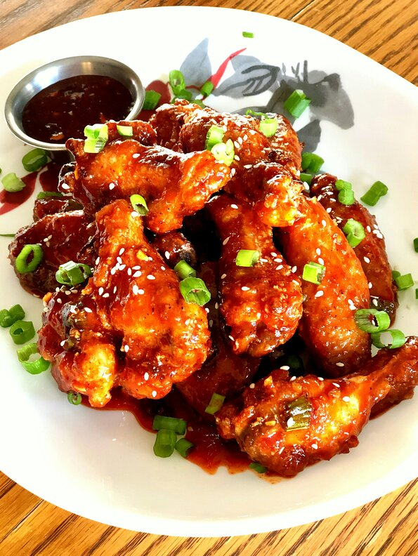

Air Fried Korean Chicken Wings

These Korean-style air-fried wings are crispy, sticky and spicy. Cooked in an air fryer they are ready in less than 30 minutes.
They are perfect as an appetizer or add some rice and veggies on the side and you have a balanced meal.
Ingredients
- ¼ cup hot honey (such as Mike's Hot Honey®)
- 3 tablespoons gochujang (Korean hot pepper paste)
- 1 tablespoon brown sugar
- 1 tablespoon soy sauce
- 1 teaspoon lemon juice
- 2 teaspoons minced garlic
- 1 teaspoon minced fresh ginger root
- ½ teaspoon salt
- ¼ teaspoon black pepper
- ¼ cup finely chopped green onions (green part only)
Steps
- 2 pounds chicken wings
- 1 teaspoon salt
- 1 teaspoon garlic powder
- 1 teaspoon onion powder
- ½ teaspoon black pepper
- ½ cup cornstarch